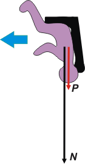

|
NO ME SALEN
PROBLEMAS RESUELTOS DE FÍSICA DEL CBC
|
|

|
 |
NMS 3.20 - Un avión de acrobacia realiza un loop (giro
o vuelta en el aire) vertical de 125 m de diámetro
con velocidad de módulo constante. La reacción
normal del asiento en la parte superior del
loop es 3 veces el peso del piloto. La velocidad
tangencial del avión en el giro es: |
|
a) 40 m/s b) 25 m/s c) falta conocer la masa del piloto
d) 50 m/s e) 56 m/s f) 71 m/s
|
Me parece que conviene que charlemos algunas cositas antes de ponernos a resolver el ejercicio. |
|
|
 |
Loop es lo que te muestra la ilustración: un rulo en el aire, en un plano vertical, que hace que el piloto (y el avión) queden por un instante cabeza abajo. Contrariamente a lo que piensa la mayoría de la gente, no creas que en ese momento las monedas de tu bolsillo caerían al aire. Por el contrario: si cayeran por un agujero del bolsillo irían a parar al piso del cockpit (que en ese momento está arriba) y las recogerías luego de aterrizar. (No es recomendable hacerlo en pleno vuelo). |
|
|
Tenemos loops en vuelo acrobáticos y en carritos de montañas rusas. Y, como vas a ver dentro de instantes, pueden darse varias situaciones interesantes. Una de ellas es la situación de ingravidez (que está descripta en el ejercicio 1.51). Otra es una realmente peligrosa en la que realmente se perderían las monedas... y si no fuese por el cinturón de seguridad, también se perdería el piloto. Y finalmente, la más común, la que resolvemos en este ejercicio. Miremos el DCL. |
|
|  |
Sólo actúan dos fuerzas sobre el piloto. El apoyo del asiento, N, que lo empuja hacia abajo (ya que el piloto intenta salir despedido hacia arriba), y su peso, P, que -como siempre- apunta hacia el centro de la Tierra.
Como en todo movimiento circular, estamos casi obligados a tomar un SR que tenga una dirección radial (o sea, que apunte hacia el centro del giro, del loop) y otra tangencial. Ambas fuerzas (en el instante considerado) apuntan en la dirección radial, de modo que la Segunda Ley de la Dinámica dirá:
ΣFr = m . ac
N + P = m . ac
El enunciado afirma que la fuerza que hace el asiento es tres veces el peso; entonces... |
|
|
3P + P = m . ac
4P = m . v²/R
4 m . g = m . v²/R
4 g = v²/R
De donde:
v² = 4 . g . R
v² = 4 . 10 m/s² . 62,5 m
v² = 2.500 m²/s²
|
 |
|
|
|
|
Discusión: Como ves en el desarrollo, en un loop pueden ocurrir básicamente tres cosas diferentes: que la sumatoria de las fuerzas que actúan sobre el piloto apunte hacia el centro de giro y sea mayor que la fuerza peso (que es el caso de este ejercicio); que sea igual a la fuerza peso (y obtenemos brevemente la sensación de ingravidez); o que la sumatoria de fuerzas sea menor que el peso (y en ese caso mejor que no se safe el cinturón de seguridad porque el piloto puede salir volando y será difícil recuperarlo).
Desafío: ¿Cuáles tendrían que ser las condiciones del vuelo para que la sumatoria de fuerzas aplicadas sobre el piloto valga cero? |
 |
| |
| |
| Algunos derechos reservados.
Este material didáctico no puede ser comercializado... Pero podés leerlo, memorizarlo, olvidarlo, imprimirlo, copiarlo, prestarlo, compartirlo, regalarlo, atesorarlo, y muchas cosas más. Última actualización jun-08. Buenos Aires, Argentina. |
|
|
|